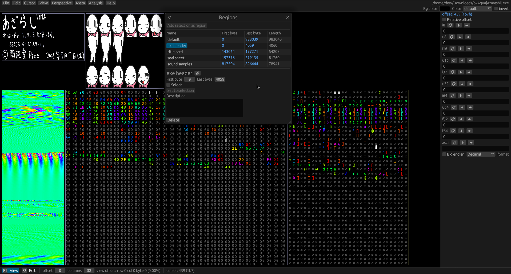
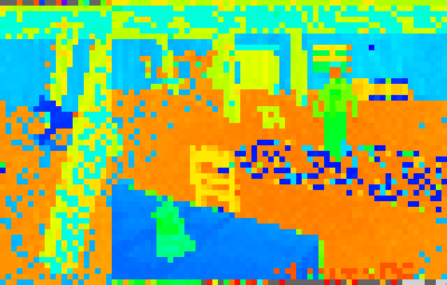

Hexerator
Hexerator is a hex editor with a unique feature set.
Its main focus is to make looking at binary files fun and easier to comprehend, but it also aims to be a good general-purpose hex editor, suitable for a wide range of uses.
Here is what it looks like: 
Tutorial
Click here for a tutorial that guides you through reverse engineering a save file for a video game.
Legend:
- = Planned
- = Implemented
Features
- Colorized values
- Easy data alignment
- Built-in process memory editing
- Multiple source types (file/streamed sources)
- Rich command line options
- Bookmarks
- Multiple configurable views
- Lua scripting support for various operations, like fill.
- External command support
- Diffing functionality
- Huge file support through memory mapped files
Non-features
Features
Colorized values
Colorizing values helps a lot with human pattern recognition.
Custom color palettes
Custom color palettes can be saved and loaded, and generated through various means.

Easy data alignment
Hexerator considers it important to easily align data with shortcut keys. Proper alignment can make a lot of difference with pattern recognition.
Process Memory editing
Built-in support for opening memory of a process and viewing/editing it. Can be used to cheat in games, or discover how different applications store data in memory.
You need to run hexerator with root/admin privileges to open memory of other processes.
Multiple source types
Hexerator supports opening both files and streamed sources like standard input or character devices like /dev/urandom.
Bookmarks
Quickly and easily save and access points of interest in the data.
Additional support for setting a type for a bookmark to display and manipulate the data
associated with it.

Multiple configurable views
You can have different views into different regions of the same file, with different column counts and other configurable properties.
Lua scripting support
You can write Lua scripts to:
- Fill a selection
- Generate a custom color palette
- More coming in the future
External command support
Support for executing a custom external command on selected data.
Diffing
There is basic support for showing differences between
- The current buffer and its source file
- The current buffer and an arbitrary file
- The current metadata and the clean metadata
- Support for more coming in the future
For now diffing is pretty barebones, shown as a list of offsets. It will be better fleshed out in the future
Huge file support through memory mapped files
Huge files that couldn't fit in memory can be opened as memory mapped files.
Non-features
Insertion
Insertion would complicate implementation, and for most binary data, including process memory, it will just mess up the data.
Memory holes support, generic support for huge data
Originally, I wanted to have a generic mechanism for loading only parts of files, but I found that it would make the implementation way more complex, and possibly inefficient, so I dropped the idea.
News
Hexerator 0.3 released! - 2024-10-16
Check out the release page!
Hexerator 0.2 released! - 2023-01-27
Check out the release page!
Hexerator 0.1 released! - 2022-09-16
This is the initial release.
Get Hexerator
Note: Hexerator is a work-in-progress. It's not polished and there are bugs. Feedback and bug reports are welcome on the git repository.
The meta file format is also not yet stable, so you might not be able to open your metafile after upgrading to a new version of Hexerator.
You can help by contributing!
The current version is 0.4.0.
Requirements
Check out the requirements before getting Hexerator.
Prebuilt versions
Packages
Building from source
You can follow the instructions here to build Hexerator from source.
Other links
Requirements
Supported platforms
- Windows 7 or newer
- Linux
Looking for a Mac OS developer/maintainer!
Hardware requirements
-
A 32 bit or 64 bit CPU. 64 bit is highly recommended, because 32 bit can only open files up to 4 GB large. Additionally, 32 bit support is not being tested right now.
-
A fairly strong GPU that supports OpenGL 2.1+. Hexerator renders using the GPU, and it can render a lot of stuff on the screen at once, making it fairly GPU intensive.
Building from source
Prerequisites
Building with cargo
If you have rustup installed, you can install Hexerator with cargo.
$ cargo install hexerator --git https://github.com/crumblingstatue/hexerator.git --tag v0.4.0
Building manually
- Get the latest source zip or tarball from the releases page.
- Extract the source somewhere
- Ensure you're using an up-to-date nightly rust. Hexerator is using nightly Rust for the time being.
- Open up a terminal, and change to the directory where you extracted Hexerator.
- Run
cargo build --release - There will be a hexerator binary built in the
target/releasedirectory.
If you run into trouble you can't seem to solve, you can ask for help at https://github.com/crumblingstatue/hexerator/discussions.
Tutorial: Alone in the Dark save files
In this tutorial, we'll go through the process of reverse engineering the save file format of the 1992 video game, Alone In The Dark.

You can download the save file (SAVE0.ITD) to follow along:
Click here to download SAVE0.ITD
Opening the file
Before we can do anything else, we need to open the file.
We can do this either through the GUI or the command line.
Gui
In the top menu bar, click File->Open..., or press ctrl + O.

This opens a file dialog where you can pick the file you want to open.
The file dialog is powered by egui-file-dialog. You can look at a list of key bindings here.
Command Line
Hexerator offers a rich command line API. But for the simple case of opening a file, we can just provide the path to the file as the argument.
$ hexerator SAVE0.ITD
Aligning Data
Once you have opened the save file, you should see something like this.

By default, there are 3 views:
- A hex view, on the left side
- A text view in the center
- A so-called block view on the right. You can think of it like a minimap.
The block view is showing something funky at the top. It almost looks like some kind of garbled up image. I wonder if we could look at it from another perspective to better understand what kind of data it is...
We can do that by shifting the number of columns around.
Hold down ctrl and the left and right arrow keys to shift the perspective around.
Try messing around until you can make sense of the image.
Spoiler
In this case, the magic number is 80 columns.
That makes a lot more sense. Although it's split in the middle. It would be nice to adjust it so it begins at the left edge of the block view.
No problem. You can press ctrl + up and down arrow keys to adjust the offset.
Spoiler
The magic offset in this case is 20.
Alright, this looks very much like the thumbnail for the save file.
We can confirm this by using a custom color palette (which you can download here: aitd.pal).
How to set this custom palette will be explained in chapter 5.

Tip: You can always keep track of the view offset and columns in the bottom panel.

Selections and Regions
Now that we have determined where the thumbnail for the save file is, we should note it down, and also inform Hexerator about it.
A-B selection
First, let's select the thumbnail. The easiest way we can do this is with a-b selection. We'll use the hex view, since it has bigger elements that are easier to click.
- First, click the hex view, then press
ctrl+Home(scroll to beginning) to make sure you're scrolled at the beginning of the view. - Then click the first byte of the view, and press
shift+1(a-select).
- Now you can press
End(scroll to last column) - The click the last byte of the thumbnail, and press
shift+2(b-select).

Regions
Now click Edit -> Selection -> Add as region in the top menu.
This will open the Regions window, where you can name your newly created region.
Let's name it thumbnail. You can press enter once finished.

You can open the regions window any time by clicking Meta -> Regions or pressing F8.

The Metafile
The information we have discovered about a file is called the Meta. It can be saved into a Metafile. Let's save our progress so far!
Click Meta -> Save As... and save your metafile into a location of your choosing.

Now any time you want to save the metafile, you can click Meta -> Save.
Additionally, you can click Meta -> Associate with current file to associate the current file
with the current metafile.
This will make it so any time you open this file, it will use this metafile automatically.
Meta items
Here is an overview of the 3 most important meta items:
-
Region
A region with a beginning and an end offset (inclusive). Our thumbnail starts at offset 20, and ends at offset 4019.
-
Perspective
Adds column count information to a region. For example, our thumbnail has 80 columns.
-
View
A configurable view into a perspective. The 3 basic view types are Hex, Text, and Block (minimap).
Perspectives, Views, Layouts
Adding a perspective
Make sure the Regions window is open (Meta -> Regions or F8).
Right click your thumbnail region, and click Create Perspective in the context menu.

The Perspectives window will pop up.
You can press enter to accept the name thumbnail for the newly created perspective.
Assuming you haven't fiddled with the column count, it will be created with 80 columns.
If that's not the case, you can drag or click the widget in the Columns row to adjust it.
Adding a layout
Let's create a dedicated space where we can put the thumbnail, and other new discoveries.
Click View -> Layout -> Add new.
This will switch to a new (empty) layout, and open the layouts window.
Adding a view
Click the Add to new row button.
From the popup menu, click New from perspective -> thumbnail -> Block.
This will add a new block view of the thumbnail to the perspective.
Tip: You can hold down the left Alt key to display some additional hover info about the visible views.
(Bonus) Custom color palette
As a final touch, we can set an appropriate color palette. If you haven't already, you can download aitd.pal.
On the right side of the top panel, there are some controls for the color palette of the current view.
Select custom from the Color dropdown menu.

You can then press the Load button to load a custom palette from a file.
In this case, the aitd.pal you presumably downloaded.

Very nice!
Don't forget to save your progress! (Meta -> Save)
Editing and Saving
Switching layouts
Let's switch back to the default layout to see what else we can figure out.
Click View -> Layout, then select the Default layout from the menu.

Let's examine more of the file!
You can use the arrow keys to scroll the view.
You can also use Page up and Page down to scroll entire pages.
Huh? What's this right after the thumbnail?

It looks like the name of the save. That nul character right after is probably the nul terminator.
Let's add it to our meta! I'll leave it as an exercise to add a region and perspective for it. Revisit 2.3 and 2.5 if you need a refresher.
Once you're done, switch back to our custom layout.
Now let's add a text view of the save name to it.
Tip: You can right click the view area for a context menu.
From there, you can click Layout properties... to open the layouts window with the current
layout selected.

Let's add it to the left of the thumbnail! Click the Add to current row button next to it.
This time, let's select a text view from the menu.
Don't forget to save your metafile! (Meta -> Save)
Editing the text
Click inside your new text view to make sure it's focused. The currently focused view has a yellow border around it, rather than gray.
Switching to edit mode
Hexerator is a modal editor.
The two modes are View and Edit.
You can see the currently active mode at the left side of the bottom panel.
Click Edit or press F2 to switch to edit mode.

Editing the text
When edit mode is active, the cursor keys move the edit cursor rather than scrolling the view.
You can press the Home key to jump the cursor to the beginning of the view.
Now enter whatever text you want for the save name.
You can press the Delete key to zero out bytes to properly nul terminate the string.
Saving
Once you are done with your editing, you can click File -> Save to save the file.

Indeed, it looks like our edit has been successful.

Wrapping up
Hexerator has a lot more features, but currently they are out of the scope of this tutorial.
I hope you'll have fun exploring them on your own!
Expect the documentation of Hexerator to improve in the future.
Contributions to the documentation are welcome at https://github.com/crumblingstatue/hexerator-book!
Ui Overview
Open a file either with a command line argument, or by selecting File->Open... from the top menu.
You should be greeted with a sight similar to this:
Menu bar
At the top is the menu bar. It contains most actions you can perform. Many actions also have shortcut keys, which are displayed on the right side of the menu buttons.
Views
At the center are the views. Views are the main way you can view and interact with the file you opened. By default, you get 3 views:
- A Hex view, which displays data in a hexadecimal format.
- A Text view, which makes it easier to recognize text.
- A Block view, which can serve as a minimap, or display embedded graphical data.
Interact mode
Hexerator has two interaction modes.
View mode
Press F1 to activate.
This mode is used to navigate around the file in order to discover its contents.
- The arrow keys scroll the active view, letting you navigate around the file.
- You can hold down
left shiftto scroll faster. Page upandPage downkeys scroll a page's worth of content.HomeandEndnavigate to the beginning and end of the file respectively.ctrl+Left/Rightarrow keys to change the column count of your active perspective.ctrl+Up/Downarrow keys to change the starting offset of your active region.
Edit mode
Press F2 to activate.
This mode is used to edit the file by entering text through the keyboard.
- The arrow keys move the edit cursor.
Inspect panel
The inspect panel provides multiple interpretations of the data the edit cursor or mouse is pointing at. It can be useful in figuring out what type of data we're dealing with.
Meta overview
In order to understand how to use Hexerator, we'll establish some basic concepts.
What is the Meta?
When you open a file with Hexerator, you're opening a raw binary file. The raw binary file itself doesn't dictate how a hex editor should display it, or how to interpret the raw binary data contained within. Instead, it's up to the user to figure out all that stuff. The Meta contains all the information on how to meaningfully interpret and display the data. It can also contain various notes and discoveries made by the user.
Meta components
Regions
Regions are the most basic metadata. They are used to mark regions of the file that are meaningfully different. For example an executable might contain a header, executable code, and data. These could be marked as 3 different regions in Hexerator.
The default region is the entire file.
You can select Meta->Regions from the top menu, or press F8 to bring up a list of regions, and create
new ones.
In order to create a new region, you first need to make a selection.
Perspectives
Perspectives tell Hexerator how to align the data, by setting the number of columns used to display them. Each perspective has an associated region.
You can press ctrl + Left and ctrl + Right arrow keys in View mode to adjust the column count
for the current perspective.
Additionally, perspectives have a special mode to flip the row order, to display rows upside down. This is useful because sometimes things like images are stored upside down in binary files. Weird, I know.
You can select Perspective->Perspectives from the top menu, or press F7 to bring up a list of
perspectives, and create new ones.
Views
Views are the windows through which data is viewed and interacted with. Each view has an associated perspective. Views that share the same perspective scroll together. So if the hex view of a perspective is scrolled, the text and block views scroll along with it.
Currently there are 4 basic types of views
- Hex
- Decimal
- Text
- Block
You can right click a view and select View properties... to look at and change the properties
of a view.
You can also select View->Views from the top menu, or press F6 to bring up a list of views,
and create new views.
Layouts
Layouts are groups of views that are displayed together. You can create multiple layouts that show different places in the file in different ways.
A layout consists of one or more rows, and each row can contain one or more view. Hexerator will try to lay out the views in a sensible manner, based on the row and column they belong to.
The default layout is a Hex view, a Text view, and a Block view side by side.
You can select View->Layouts from the top menu, or press F5 to bring up a list of layouts, and
edit the current layout, or add new ones.
Bookmarks
Bookmarks are places of interest in the data at various offsets. They can also additionally be assigned a data type, which allows them to show a handle to the data at their offset, which shows the value and allows it to be edited.
You can select Meta->Bookmarks from the top menu, or press F9 to show a list of bookmarks, and
add new ones.
You can also right click a location in a view, and select Add bookmark.
Basic operations
A-B select
Click somewhere in a view to set the cursor to that location.
You can then press shift+1 in View mode to set the A point of a selection,
and shift+2 to set the B point of a selection.
Once you have both an A and a B point, the selection is the region spanning
A and B.
Once you have a selection, you can do various things with it.
- Add a region by right clicking, and selecting
Add region as selection - Fill using the fill options in the
Editmenu - Run an external command on the selection using
Edit->External command... - Unselect with
Esc
Select all
You can select everything in a view with Edit->Select all in view or Ctrl+A.
Other operations
Documentation is a work-in-progress. Use the top menu to discover the kinds of things you can do in Hexerator! Also don't be afraid to right-click stuff. Right clicking things might reveal additional operations you can do.
Feature documentation
Here are documentation for individual features.
Memory mapped files
Hexerator supports opening files as memory mapped.
If you have a large file that can't fit into memory, you can open it as memory mapped to lazily access it without loading the whole thing into memory upfront.
You can also access things like block devices this way.
Note: Hexerator needs exclusive access to memory mapped files.
Sound behavior cannot be guaranteed if there are other programs accessing the same file.
Hexerator itself currently does not use any kind of locking mechanism, so you have to ensure this manually.
The --unsafe- prefix of the CLI flag reflects this.
CLI flags
--unsafe-mmap <mode>
Try to open the source using mmap rather than load into a buffer
Possible values:
- ro: Read-only memory map. Note: Some features may not work, as Hexerator was designed for a mutable data buffer
- cow: Copy-on-write memory map. Changes are only visible locally
- dangerous-mut: Mutable memory map. *WARNING*: Any edits will immediately take effect. THEY CANNOT BE UNDONE
--mmap-len <len>
Assume the memory mapped file is of this length (might be needed for looking at block devices, etc.)
- The recommended mode is
rofor read-only access. cowcan be used to allow saving changes to a memory mapped file, but currently I'm not sure if the implementation is sound/bug-free.
WARNING: dangerous-mut creates a direct mutable memory mapping.
Any changes you make will have immediate effect. They CANNOT be undone.
Use only as a last resort, and with extreme caution.
File dialog
You can also open a file as memory mapped from the file dialog UI.
Check the mmap flag, and select the mode from the mode dropdown menu.

Command line API
Hexerator aims to support a wide variety of use cases, so it exposes a lot of different options.
Here is the help generated by hexerator --help:
Usage: hexerator [OPTIONS] [FILE]
Arguments:
[FILE]
The file to read
Options:
-j, --jump <offset>
Jump to offset on startup
--hard-seek <offset>
Seek to offset, consider it beginning of the file in the editor
--take <bytes>
Read only this many bytes
--read-only
Open file as read-only, without writing privileges
--stream
Specify source as a streaming source (for example, standard streams). Sets read-only attribute
--stream-buffer-size <STREAM_BUFFER_SIZE>
The buffer size in bytes to use for reading when streaming
--unsafe-mmap <mode>
Try to open the source using mmap rather than load into a buffer
Possible values:
- ro: Read-only memory map. Note: Some features may not work, as Hexerator was designed for a mutable data buffer
- cow: Copy-on-write memory map. Changes are only visible locally
- dangerous-mut: Mutable memory map. *WARNING*: Any edits will immediately take effect. THEY CANNOT BE UNDONE
--mmap-len <len>
Assume the memory mapped file is of this length (might be needed for looking at block devices, etc.)
--recent
Open most recently used file
--meta <path>
Load this metafile
--version
Show version information and exit
--debug
Start with debug logging enabled
--spawn-command <command>...
Spawn and open memory of a command with arguments (must be last option)
--look-for-proc <name>
When spawning a command, open the process list with this filter, rather than selecting a pid
--autoreload [<interval>]
Automatically reload the source for the current buffer in millisecond intervals (default:250)
--autoreload-only-visible
Only autoreload the data visible in the current layout
--autosave
Automatically save if there is an edited region in the file
--layout <name>
Open this layout on startup instead of the default
--view <name>
Focus the first instance of this view on startup
--load-plugin <LOAD_PLUGIN>
Load a dynamic library plugin at startup
--new <length>
Allocate a new (zero-filled) buffer. Also creates the provided file argument if it doesn't exist
-h, --help
Print help (see a summary with '-h')
Hexerator design document
Goals
Hexerator is a hex editor aiming to aid in pattern recognition and binary file discovery.
It also aims to be a good and versatile hex editor usable in a large amount of scenarios,
including editing /proc/id/mem and reading streaming sources, making it usable to read
piped data.
User interface
Perspective
A Perspective is a view into a Region with a specific column count.
A variable column count is very helpful for better recognizing certain patterns in data, and is one of the core features of hexerator. A Perspective on its own doesn't really do much. To make use of perspectives, there are Views.
View
A View is a region on the Viewport that provides a look into the data presented by a perspective. A view can be one of multiple kinds, like hex, ascii, block (pixel, kind of like a minimap), and it's scrollable, allowing you to explore different parts of a perspective. You can have multiple views on the Viewport. There is a focused view that you are currently focused on and scrolling/editing, etc.
By default, all views that share the same perspective sync their scroll offsets with the focused view. This behavior can be turned off if independent scrolling is desired.
Viewport
The Viewport is the area in the window where the Views are laid out.
The other things that take up space in the window are the UI panels and windows.
Concepts
BinData
The BinData is the raw binary data opened inside hex editor.
It can be opened from a file, or streamed from a streaming source, like a pipe.
Region
A Region is a slice of the BinData.
It has a start offset which determines where it begins,
and an end offset which determines where it ends.
A Region can be given a name to give it an easy to remember
identifier and also help remember what it's about.
It can also have a description which can give further useful information about it.
Meta
A Meta is all the metadata about a binary format. It can include things like Regions and Views that aid understanding
of a binary format.
Limits
To make development easier, and help keep my sanity, hexerator defines some value limits.
File size
The supported file size is min(usize, i64), which is ~4GB on 32 bit platforms,
and practically limitless on 64 bit platforms. 16 bit platforms are not supported.
Resolution and mouse position
These are i16, meaning values higher than 32767 are not supported. The minimum supported resolution is 920x620. The ui is not designed and tested for resolutions lower than that.
Block size
A block, or cell (final name not decided) is the element that displays a value.
Like a hex pair, an ascii character, etc.
The size range is 1..i16::MAX.
Contributing
Hexerator welcomes contributions!
The repository is on GitHub
There is also a Discussions page that can be used for both help and ideas, as well as general discussion.
See Build from source if you want to contribute code to Hexerator and want to build it from source.